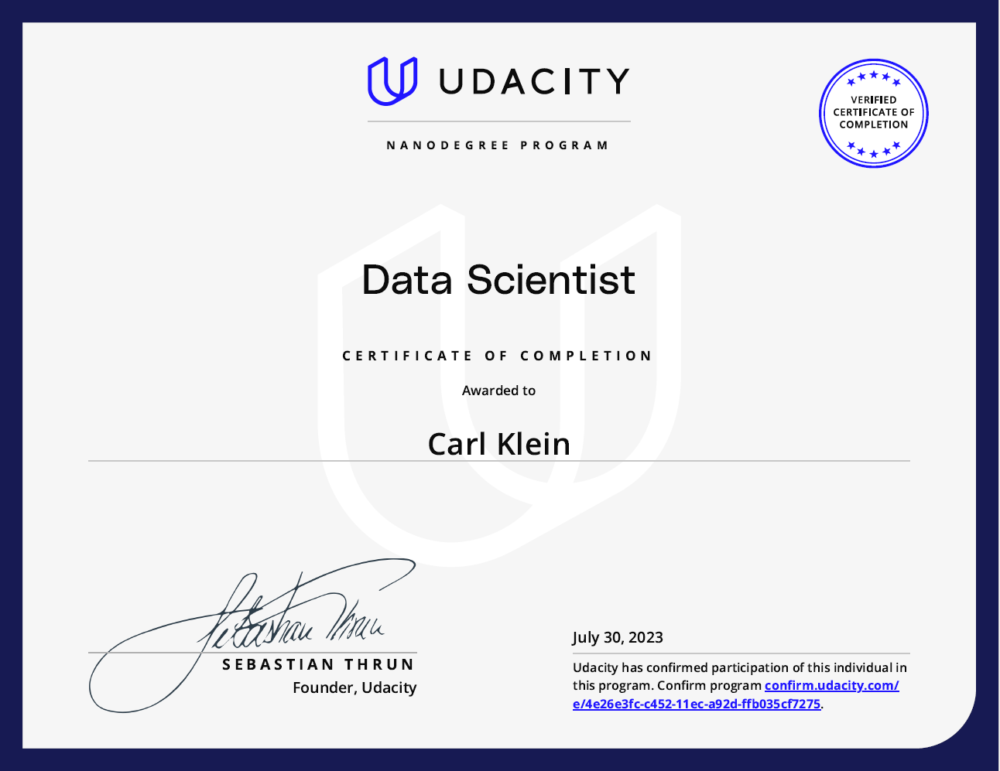
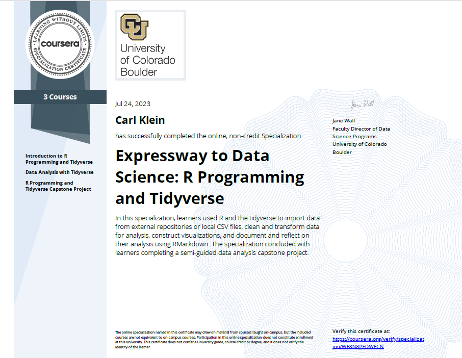

Virtual Resume
Career Experience
Pattern Energy Group
Data Analyst Intern
Summer 2024
During the summer of 2024, I interned at Pattern Energy Group, where I was able to utilize what I had been learning throughout the first year of my master’s degree.
Key Tasks and Accomplishments:
- Accessed and navigated petabytes of data through a Linux server.
- Created robust analytical tools which can use a wide variety of inputs to model different renewable energy scenarios.
- Used network analysis and predictive modeling to illustrate how an energy grid can optimize transfers between counties.
Parker, Smith & Feek
Benefits Data Analyst
2018 - 2023
My first career experience after finishing my undergraduate degree. During this time, I provided analytical insights and financial reports to multiple clients, all while building a network and learning about professionalism.
Key Tasks and Accomplishments:
- Updated and monitored financial and health data used in conducting analyses to identify trends, discrepancies, and produce recommendations.
- Leveraged findings during the renewal process and utilized data to negotiate premiums with insurance carriers.
- Communicated key metrics and statistics by preparing and presenting periodic reports for clients.
- Automated internal tasks by creating VBA macros and scripts.
Small scale automation projects during my time as a Benefits Data Analyst helped me start to develop my programming repertoire, and a few of the generic models I built prior to implementing in my work can be found here.
Education
Master of Science, Data Science (MSDS)
University of Colorado. Boulder
2023 - Current
Expected Graduation 2025
Key Accolades
Bachelor of Arts in Mathematics, Minor in Applied Mathematics
University of Washington, Seattle
2013 - 2017
Graduated 2017
Key Accolades
- Alpha Sigma Phi Fraternity
- UW Actuary Club
- Co-President
- Communications Chair
Certifications
Data Science Nanodegree
Udacity
2023
Gained real-world data science experience with curriculum and projects designed by industry experts.
An online certificate of completion can be found here.
Knowledge Gained:
- Used Python across many data science topics, while utilizing Git to document the progress.
- Object Oriented Programming and Web Development.
- ETL Pipelines, Natural Language Processing, and Machine Learning Pipelines.
- A/B Testing and Recommendation Engines.
Projects Completed:

Expressway to Data Science: R Programming and Tidyverse
Coursera
2023
A specialization in R programming earned upon the completion of 3 courses:
- Introduction to R Programming and Tidyverse
- Data Analysis with Tidyverse
- R Programming and Tidyverse Capstone Project
An online certificate of completion can be found here.
Knowledge Gained:
- Use R and the tidyverse to import data from external repositories and local CSV files.
- Clean and transform data for analysis, construct visualizations.
- Document and reflect on analyses using RMarkdown.
Projects Completed:

Technical Proficencies
Excel
The main analysis tool of my first position after my undergraduate degree, I used Excel almost daily for 5 years for real world analyses. This encompassed the exploratory, the explanatory, and anything visual; I was tasked with creating PowerPoint presentations, PDFs, and dashboards all driven by Excel.
My Downloadable Resume was even created using Excel.SQL
VBA
I was tasked with primarily using Excel in my first position after my undergraduate degree, there were some disadvantages that aren’t inherent in tools such as Python. To combat this, I learned VBA and implemented several macros and even completed entire projects aimed at increasing efficiency and reducing errors.
Although not as user friendly as a language like Python, using VBA shined a light on how processes surrounding data pipelines could look, and ultimately gave me a nudge to continue down the data science pathway.
Please see VBA Projects for some examples.Git & GitHub
Python
A staple of modern programming, Python is my preferred language.
- Basic Functions
- Object Oriented Programming
- NumPy
- Pandas
- Visualizations
- matplotlib
- seaborn
- plotly
- Jupyter notebooks
- interactivty with ipywidgets
- sklearn
- NLTK
LaTeX
After working for a few years and deciding to go deeper into data science, I needed to brush up on my math skills. Something that I neglected from my undergraduate years was keeping my math notes well organized and accessible. This time around, I decided that I was going to create a system that I could return to when needed.
Learning LaTeX has actually proven to be indispensable during my time back in my Master’s of Data Science program.R
Probably second to Python as my preferred language, I’ve used R extensively in my statistics courses. I was surprised to find it almost as capable as Python.
Part of completing the Expressway to Data Science: R Programming and Tidyverse certificate listed above was successfully passing the capstone, for which I did the COVID Analysis project.
Additionally, the project Bias in Facial Classification ML Models was done almost exclusively in R. Although a group effort, I was responsible for building the Shiny dashboard seen in this section. The standalone app is hosted on shinyapps server, available here.Quarto
I was first introduced to Quarto during the project Bias in Facial Classification ML Models. since then, I’ve recognized the potential in it’s utility. To name a few instances:
- Academic Papers
- Interactive Dashboards
- Websites